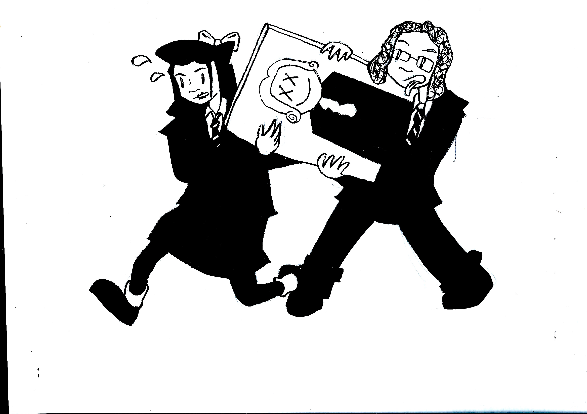
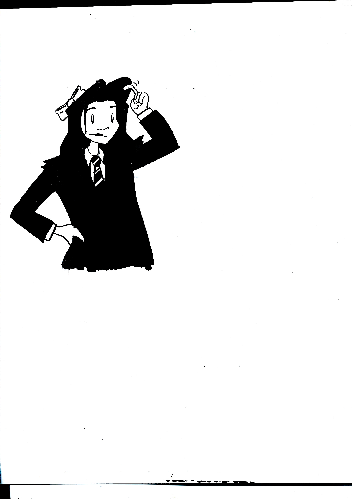
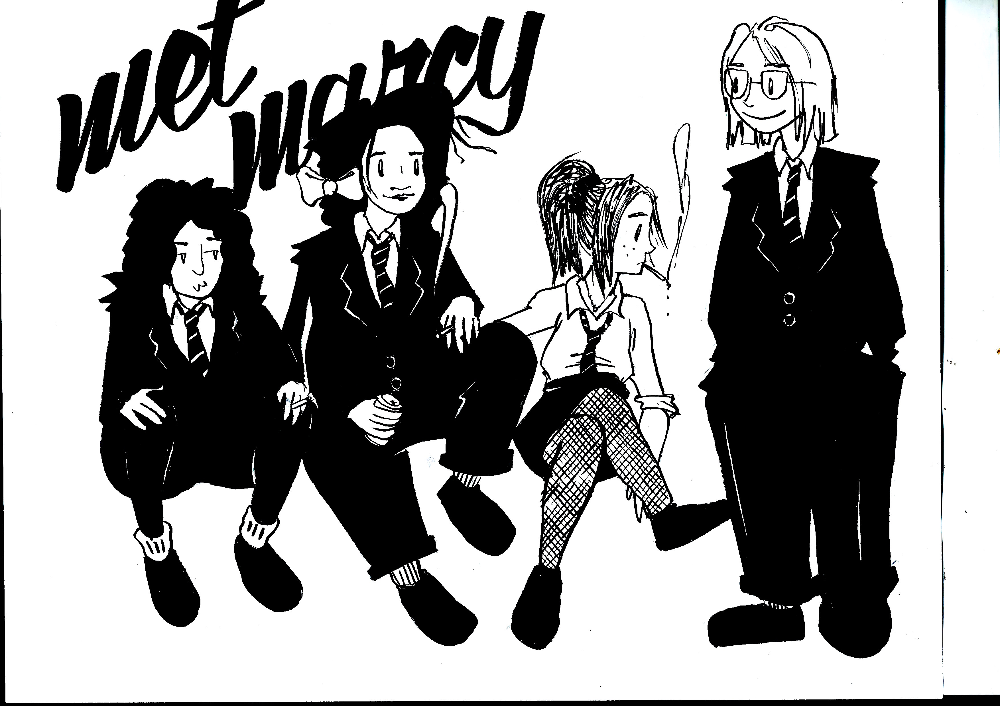
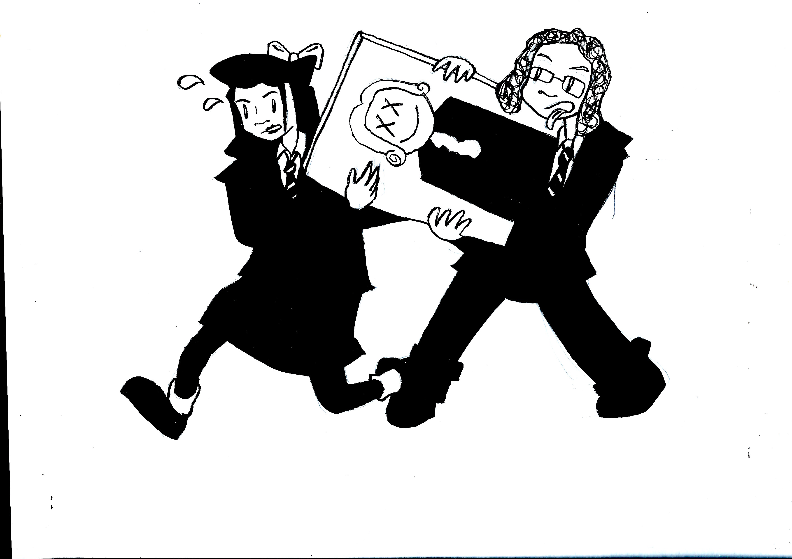
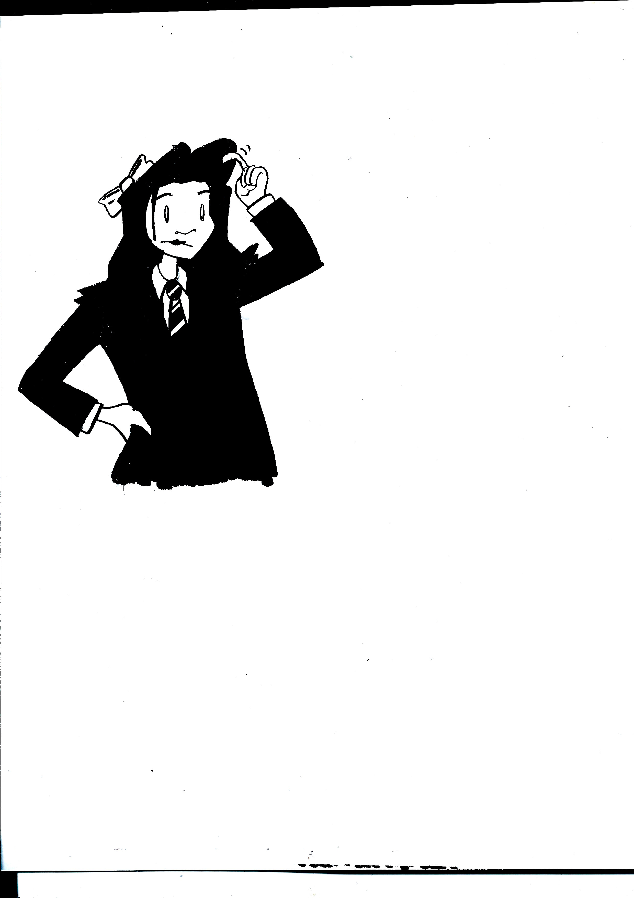
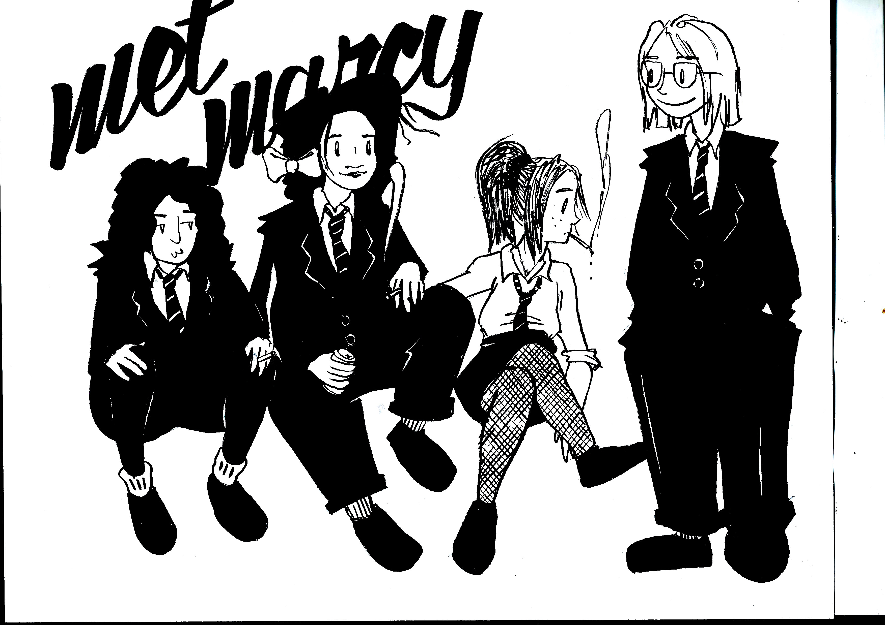

Met Marcy... to Xiaowen
 





I found these scans of some concept exercises I did for Xiaowen Guo AKA "Guffy", the star of Guffy's dilemma (found in the comics section). The comic was originally going to be a series called "Met Marcy", about a girl (the one with the glasses at the end) who works at the Metropolitan Museum. I have a crush on all the girls that wear baggy suits who work at the Met. Anyway, Xiaowen was supposed to be a side character, but I felt she had so much more personality than Marcy that I just had to switch gears. Anyway, I thought I'd throw these in for fun since I dunno what else to do with them.